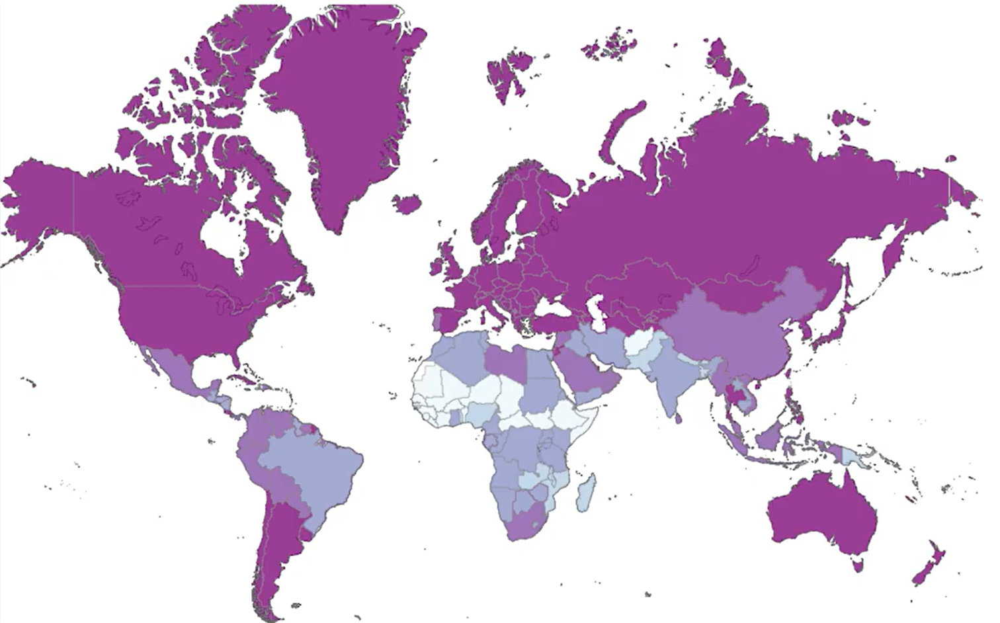
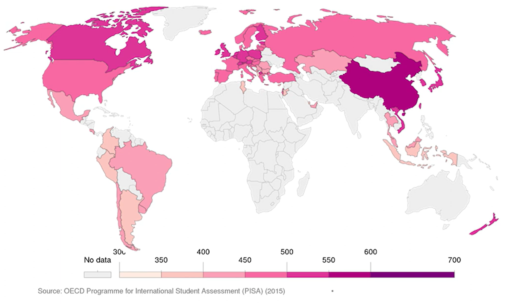
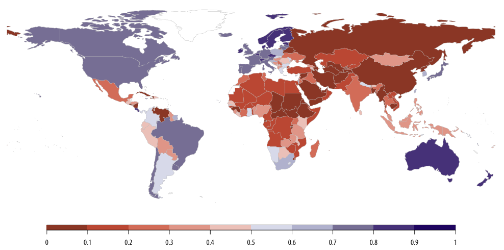
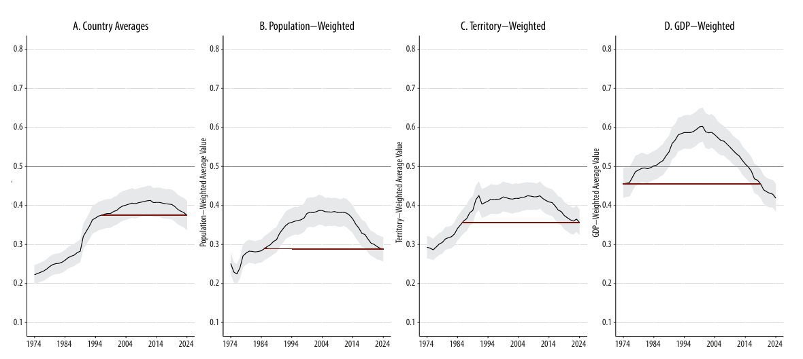
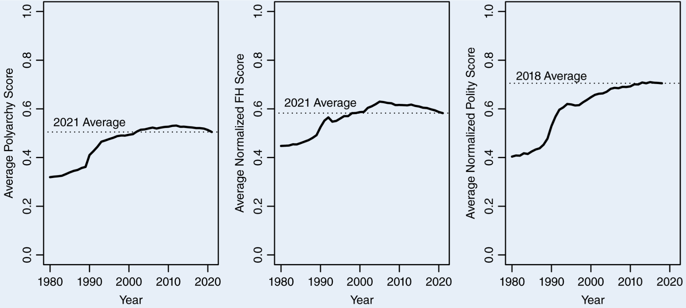
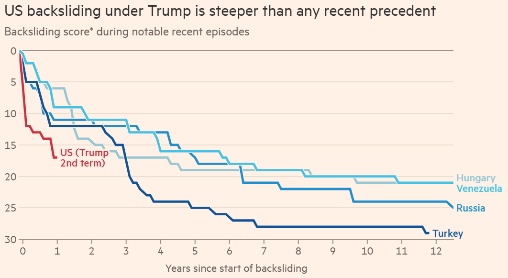

Lecture 3: Measurement and Types of Variables
Statistics for Political Science
Welcome
Today’s goals:
- Recap the core points from this week’s videos
- Work through a group discussion on measuring democracy
Example: Education levels and democratisation
- Research question: Do higher levels of education make countries more likely to democratise?
Level of education
- How do we know if a country’s level of education is high or low?
- What information do we collect?
- We should start by figuring out a definition for the level of education.
Defining the level of education
- Accessibility of basic education to all citizens?
- Proficiency of students in reading, math, and science?
- The implications for research are not trivial!
From definition to measurement
A measurement for accessibility: Literacy rates.
- A good (but not perfect) approximation.
A measurement for proficiency: Students’ standardised exam scores.
- PISA (Programme for International Student Assessment).
Literacy rates

PISA scores

From education to democracy
- Research question: Is there a global trend towards democratic backsliding?
- A pressing contemporary debate that highlights the importance of measurement choices.
- Recent debates focus on a particular measurement: Varieties of Democracy (V-DEM).
Varieties of Democracy (V-DEM)
- Democracy measured as an interval variable (countries are given scores between 0 and 1)
- Sends questionnaires to over 3,700 country experts.
- Questions about several indicators deemed necessary to determine if a country is democratic.
The V-DEM world map

Is democracy backsliding? According to V-DEM, yes!

Is democracy backsliding? According to other indicators, no!

The critique: Little & Meng (2024) on V-Dem
V-Dem relies heavily on expert judgments, which may shift over time even if underlying political institutions do not.
Changes in expert expectations or standards can look like changes in democracy.
As an alternative, Little and Meng argue for focusing on indicators of democracy that are less sensitive to subjective interpretation.
What does their alternative look like?
Little and Meng (2024) propose measuring democracy using indicators as:
Whether incumbents and ruling parties lose elections and accept defeat.
The degree of electoral competition, including vote shares and seat shares of winning parties.
The presence and enforcement of formal institutional constraints, such as term limits and succession rules.
The counter-critique: V-DEM’s side
Scholars associated with V-Dem respond that:
Democracy is inherently multidimensional and cannot be adequately captured by a narrow set of observable outcomes.
Indicators presented as “objective” by Little and Meng still involve coding decisions and theoretical assumptions; they are not free from subjectivity.
Expert-based measures are not a feature, not a bug for measuring complex political concepts.
Group activity: How to measure democracy?
In small groups, discuss the debate you have just seen.
Your task is not to decide whether democracy is declining, but to decide which approach to measurement you find more convincing.
Focus on the trade-offs between expert judgment and more “objective” indicators, and on what each approach can and cannot capture.
Guiding questions for discussion
Which critique or defense do you find more persuasive, and why?
What do you think is lost when we move away from expert judgments?
What do you think is lost when we rely heavily on subjective assessments?
If you had to choose one approach to answer the question of democratic backsliding, which would you choose?
Dig Deeper
How steep is Trump’s democratic backsliding?
- Financial Times, 31 Jan 2026 (Access with your King’s email account).
Methodology reviewed by Anne Meng.

Why this matters
Measurement choices are not neutral. They shape what we see in the data and the conclusions we draw from it.
Different definitions and measurements of the same concept can lead to very different answers to the same research question.